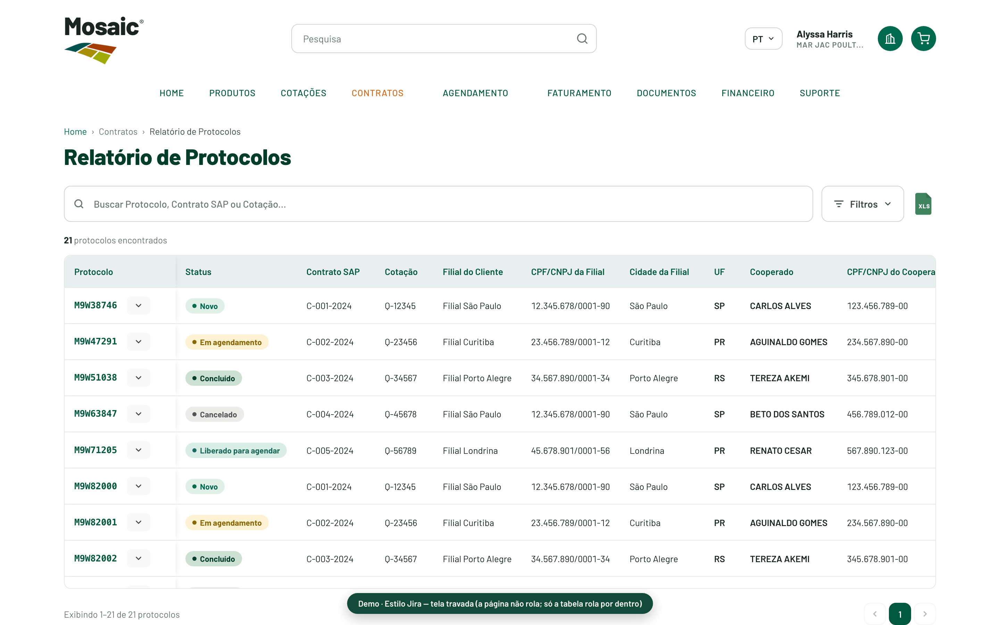

Registro tela a tela das melhorias de experiência aplicadas aos protótipos navegáveis do portal — padronização de modais, tabelas, fluxos de agendamento e protocolo.
Produto
Mosaic Direct 2.0
Escopo
Portal do Cliente (V2)
Data
Junho de 2026
Autor
Victor Dias
Visão geral
O que foi melhorado
Esta documentação reúne as melhorias de usabilidade aplicadas aos protótipos do Mosaic Direct 2.0.
O foco foi deixar as telas consistentes entre si, padronizar os componentes de interação
(modais, tabelas, edição) e resolver os atritos apontados pelo PO e pelo time —
sempre respeitando a identidade visual da Mosaic.
7
Telas do portal documentadas
100%
Modais centralizados (sem side-nav)
3
Opções de scroll horizontal
V2
Original preservada (backup + tag)
Sumário
01 · Identidade
Identidade & Design System
Todas as telas usam a mesma base visual da Mosaic: tipografia Barlow, paleta institucional verde,
cabeçalho com logo, busca e navegação, e um conjunto compartilhado de componentes. Nada foi inventado
fora desse sistema — as melhorias reaproveitam os mesmos blocos.
Paleta institucional
Verde 900
#003E2A
Verde 800
#00583D
Verde 700
#006A4D
Teal
#2C8B78
Amarelo
#F0C020
Laranja
#D56B1A
Vermelho
#B9202A
Fundo
#FAFAF8
Componentes compartilhados
Cabeçalho único — logo Mosaic, busca centralizada, usuário e navegação (Home, Produtos, Cotações, Contratos, Agendamento, Faturamento, Documentos, Financeiro, Suporte) com item ativo em destaque.
Tabelas — linha zebrada, colunas concatenadas (informação relacionada na mesma célula), truncate, saldo destacado em verde, borda de status à esquerda.
Modais — confirmação, sucesso e seleção, todos com a mesma estrutura (cabeçalho, corpo, rodapé com ação primária verde).
Datepicker, badges de status e frete (CIF/FOB) — idênticos em todas as telas.
02 · Tela a tela
Melhorias por tela
Cada tela abaixo traz a captura atual, a função e a lista de melhorias aplicadas. Os links levam à versão navegável.
Início
Hub do Portal
Página inicial que lista e dá acesso a todas as telas do portal do cliente.
Melhorias
Telas organizadas em grupos visuais por contexto.
Telas internas de Salesforce (manutenção) ocultadas do hub do cliente.
Relatório de Protocolos promovido ao grupo principal.
A principal padronização: todos os painéis laterais (side-nav) viraram modais centralizados, em todas as telas — seleção de contratos, protocolos, cooperado, roteiro e edição em massa.
Antes: painel lateral · Agora: modal central
Foco no centro da tela
Janela centralizada, com cantos arredondados e fundo escurecido.
Rolagem interna na lista e rodapé fixo com a ação primária.
Mesmo comportamento em Selecionar contratos, Selecionar protocolo, Selecionar cooperado, Roteiro e edição em massa.
Aplicado de forma consistente em todo o portal.
04 · Tabelas largas
Scroll horizontal — 3 opções
As tabelas largas (Relatório de Protocolos com 24 colunas e Criar Protocolo com 14) precisavam de uma forma
melhor de acessar as colunas que não cabem na tela — sem duas barras simultâneas e com uma barra
maior e mais fácil de pegar. Três opções foram preparadas para decisão.

1
Estilo Jira (tela travada)
A página inteira não rola: topo e rodapé ficam fixos e a tabela ocupa o resto da tela, rolando só por dentro (horizontal e vertical), com cabeçalho fixo.